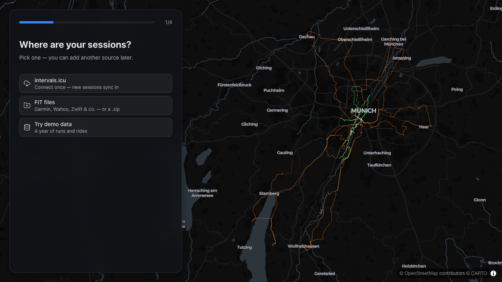
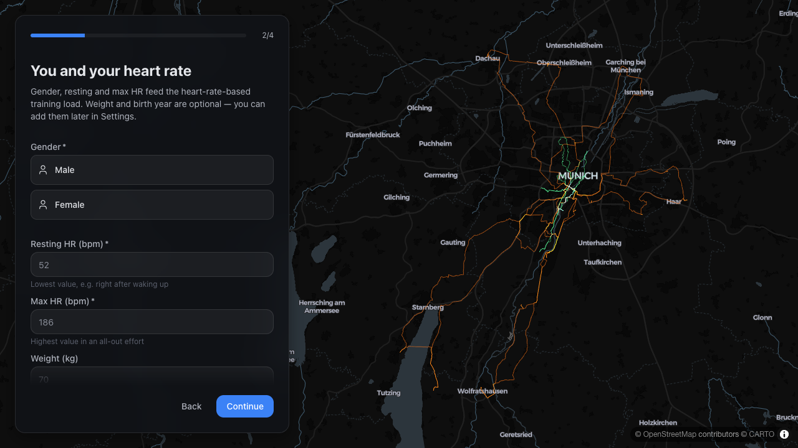
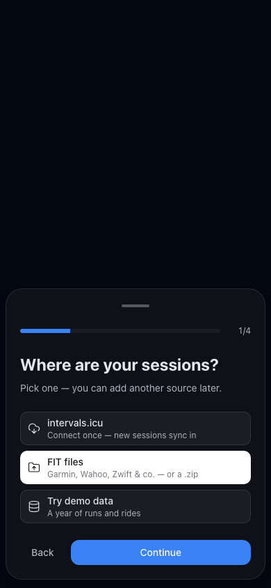
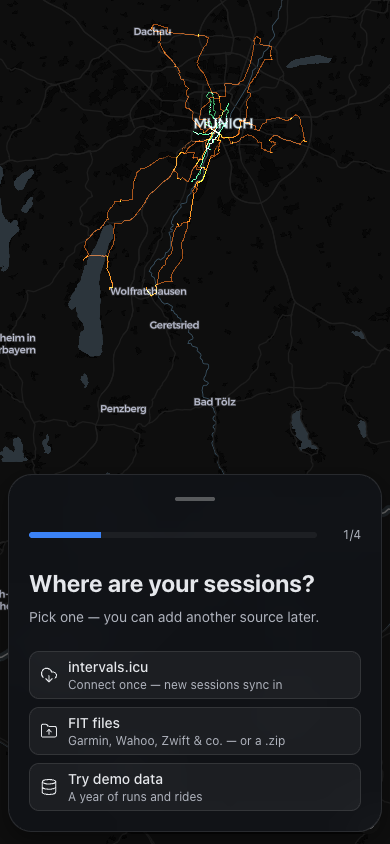

R11Source step: no Back, no Continue (R-O5)
Step 1/4 has no footer. Tapping intervals.icu or FIT files stores the source and goes
straight to step 2; "Try demo data" starts the demo as Continue did before (import
overlay, then the app with the demo banner). Back on step 2 still returns to the source
step. The phone Dialog renders no DialogFooter on this step, so there is no
empty bar; the card is just shorter. The tiles are plain buttons now (Tab, Enter or
Space), no longer radios: nothing stays selected, so the white "picked" tile is gone,
and so are pickOnboardingSource, the disabled-Continue logic and the
'demo' value of OnboardingSource. When a step change removes
the focused control (a tile, or Back on the way to step 1), focus moves to the new
step's heading; Continue keeps its focus as before. The progress bar still shows 1/4.
src/features/onboarding/OnboardingStep.tsx:108 (pickSource),
:116 (SourcePicker), :317 (no primary),
:383-387 (heading focus), :402, :420 (footer only
with a primary); src/features/onboarding/hooks/useStepFocusEffect.ts;
src/store/onboarding.ts:6,
:49 (chooseOnboardingSource), :54. Tests:
e2e/onboarding.spec.ts:60 (no Back / Continue on 1/4, keyboard pick,
focus), e2e/helpers/onboarding.ts:12 (tap the tile, no Continue).
Round 2 took no source-step shots and did not change that step, so the "before" shots are the round-1 "after" ones.
Desktop · 1280 × 720 · source step: before with Back and Continue, after tiles onlydrag to compare

BeforeAfterDesktop · 1280 × 720 · FIT files tapped, step 2

AfterPhone · 390 × 844 · source step

